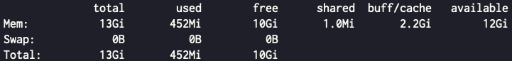
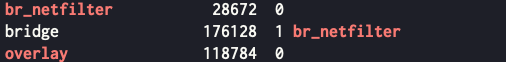
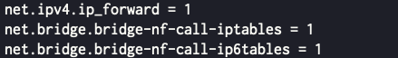

Kubernetes 버전
export KUBE_VERSION='v1.36'
- 이 버전 기준 아래의 방법으로 정상적으로 설치됨이 확인됨.
Prerequisites
/etc/hosts 설정
필수는 아님
- 해보니까 필수는 아니다. 이거 없어도 잘 된다.
- 근데 entrypoint 를 domain 으로 한 경우에는
/etc/hosts에 넣어놓거나 아니면 DNS server 에 넣어놓거나 해야 된다. 둘 다 안돼있으면 resolve 가 안돼서 에러난다.
- 다음의 두가지가
/etc/hosts에 있어야 한다.
- 클러스터 entrypoint 를 위한 놈이 하나 들어가 있어야 한다.
- 물론 이건 필수는 아니다. 근데 하는게 좋을껄?
- 왜냐면 HA 구성을 위해 VIP 를 사용해야 할 수도 있는데, 그때 클러스터의 entrypoint 가 그냥 IP 로 박혀있으면 이걸 고치는건 보통 귀찮은게 아니다.
- 그래서 클러스터의 entrypoint 를 IP 로 그냥 박기 보다
/etc/hosts에 하나 낑가놓고 이놈을 사용하면 나중에 IP 가 바뀌어도 그냥/etc/hosts만 바꾸면 된다. - 아래 예시를 보자.
- 모든 노드에 모든 노드에 대한 hosts 가 들어가있어야 한다.
- 예를 들어 controlplane
192.168.0.2하나랑 worker192.168.0.3하나가 있다고 해보자. 그럼 이렇게 하면 된다.
192.168.0.2 entrypoint
192.168.0.2 controlplane
192.168.0.3 worker
- 이렇게 해놨다가 나중에 VIP
192.168.0.4를 세팅했다고 해보자. 그럼 저entrypoint만 바꾸면 된다.
192.168.0.4 entrypoint
192.168.0.2 controlplane
192.168.0.3 worker
Kube* Binary 설치
참고한 것들
- Prerequisites 설치
sudo apt-get update
sudo apt-get install -y apt-transport-https ca-certificates curl gpg- GPG 키 설치
curl -fsSL https://pkgs.k8s.io/core:/stable:/${KUBE_VERSION}/deb/Release.key | sudo gpg --dearmor -o /etc/apt/keyrings/kubernetes-apt-keyring.gpg- Repo 추가
echo "deb [signed-by=/etc/apt/keyrings/kubernetes-apt-keyring.gpg] https://pkgs.k8s.io/core:/stable:/${KUBE_VERSION}/deb/ /" | sudo tee /etc/apt/sources.list.d/kubernetes.list- 설치
sudo apt-get update
sudo apt-get install -y kubeadm kubectl kubelet
sudo apt-mark hold kubelet kubeadm kubectl
sudo systemctl enable --now kubeletSystem 설정
Swap off
참고한 것들
- 설정
sudo swapoff -av
sudo sed -i.bak '/\sswap\s/s/^/#/' /etc/fstab- 확인
free -ht
Module 설정
Info
- 옛날에는 이 설정이 필요했는데, v1.36 기준 공식문서에서 보니 없어졌다.
- 약간 CNI implementation 으로 책임을 넘기는 것 같아보인다; 사용하려는 CNI 에 따라 이 설정이 필요한지 필요없는지가 갈리는듯
- 설정
sudo modprobe overlay br_netfilter
cat << EOF | sudo tee /etc/modules-load.d/kubernetes.conf
overlay
br_netfilter
EOF- 확인
sudo lsmod | grep -iE 'overlay|br_netfilter'
iptables 설정
참고한 것들
- 설정
최신 업데이트
- 요즘은
net.ipv4.ip_forward만 해줘도 되는 것 같아 보인다:cat << EOF | sudo tee /etc/sysctl.d/k8s.conf net.ipv4.ip_forward = 1 EOF sudo sysctl --system
cat << EOF | sudo tee /etc/sysctl.d/k8s.conf
net.ipv4.ip_forward = 1
net.bridge.bridge-nf-call-ip6tables = 1
net.bridge.bridge-nf-call-iptables = 1
EOF
sudo sysctl --system- 확인
sudo sysctl net.ipv4.ip_forward net.bridge.bridge-nf-call-iptables net.bridge.bridge-nf-call-ip6tables
Containerd 설정
참고한 것들
- 설정
containerd config default | sudo tee /etc/containerd/config.toml
sudo sed -i.bak 's|SystemdCgroup = false|SystemdCgroup = true|g' /etc/containerd/config.toml
sudo systemctl restart containerd- 확인
grep 'SystemdCgroup' /etc/containerd/config.tomlCluster 생성 및 합류
- Init configuration:
apiVersion: kubeadm.k8s.io/v1beta3
kind: ClusterConfiguration
kubernetesVersion: "v1.36.3"
clusterName: "{{ 클러스터 이름 }}"
controlPlaneEndpoint: "{{ 클러스터 엔드포인트 도메인 }}:{{ 클러스터 엔드포인트 Port (기본: 6443) }}"
networking:
podSubnet: "10.240.0.0/16"
serviceSubnet: "10.96.0.0/12"
dnsDomain: "{{ 클러스터 이름 }}.local"
apiServer:
extraArgs:
enable-admission-plugins: "PodNodeSelector"
audit-log-path: /etc/kubernetes/audit/audit.log
extraVolumes:
- name: "audit"
hostPath: "/etc/kubernetes/audit"
mountPath: "/etc/kubernetes/audit"
readOnly: false
pathType: DirectoryOrCreate- 저기서
PodNodeSelector는 이것 을 위한 설정이다. - 생성:
만약 kube-proxy 대신 Cilium 을 사용할거라면?
- 공식문서 를 참고하자.
- 클러스터 생성단계에서 kube-proxy 를 비활성화시켜본 적이 없어서 일단 메모만. 나중에 직접 해보게 되면 추가하리라.
sudo kubeadm init --v=5 --config=/path/to/config.yaml- 생성 후 다음의 명령어로
kubectl을 위한 kubeconfig 를 설정해준다.
mkdir -p $HOME/.kube
sudo cp /etc/kubernetes/admin.conf $HOME/.kube/config
sudo chown $(id -u):$(id -g) $HOME/.kube/config- 클러스터 합류는 “생성” 단계의 결과에서 출력된 것을 참고하자.
- 혹은 기존의 클러스터에 합류하는 경우에는 Controlplane 노드 tty 에서 이 명령어를 실행하면 된다:
kubeadm token create --print-join-command